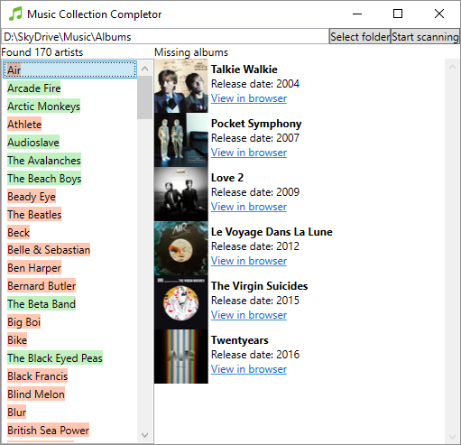

Get started
Download using the button above and unzip to any folder on your computer. Then just run MusicCollectionCompleter.exe

Just point this application at your music collection, and it will find out which albums you are missing. A green background means your collection is complete for that artist, otherwise click an artist to see available albums. Clicking the link will take you to the album's page in iTunes.
Not interested in an album? Just click the Hide button and it will never show up again.
Note: Windows support only. See all releases.